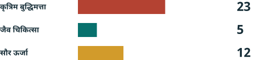

तकनीक की नई सीमाएं¶
चीन की घोषणा 48, अमेरिका के AI निर्यात नियंत्रण और चीन के खुले मॉडलों के भविष्य की सरल, चित्रों सहित पुस्तक।

शोध संस्करण: 2 नवंबर 2026। हम लागू नियम, प्रस्ताव और अपना विश्लेषण अलग रखते हैं। यह पुस्तक किसी खास सौदे की मंजूरी नहीं देती।
दो देश, अलग रास्ते¶
चीन: पंजीकरण शुरू, सूची में बदलाव अभी प्रस्ताव। 16 अक्टूबर की घोषणा में 40 तकनीकें हैं: AI की 23, जैव चिकित्सा की 5 और सौर ऊर्जा की 12। इनमें 14 को प्रतिबंधित और 26 को अनुमति के अधीन रखने का प्रस्ताव है। संबंधित निर्यात से पहले अस्थायी पंजीकरण उसी दिन शुरू हुआ। शुरू हो चुके लेकिन अधूरे निर्यात भी शामिल हैं। राय देने की अंतिम तारीख 15 नवंबर 2026 है। CN48 CNQA
अमेरिका: चिप नियंत्रण लागू, मॉडल नियम की स्थिति जटिल। उन्नत AI चिप के लिए अनुमति, देश, खरीदार और उपयोग की जांच जरूरी है। 15 जनवरी 2026 से शर्तें पूरी करने वाले H200 जैसे चिप अमेरिका से चीन या मकाओ भेजने के आवेदन पर अलग-अलग विचार हो सकता है। इसका अर्थ अपने आप मंजूरी नहीं है। AI प्रसार नियम प्रकाशित पाठ में बना है, लेकिन BIS ने उसे लागू न करने की घोषणा की। मई 2026 में GAO ने उस नीति की प्रक्रिया पर सवाल उठाया। US26 EAR742 USNE GAO26 EAR774
मुख्य निष्कर्ष¶
यह घोषणा चीन के सभी खुले मॉडलों पर रोक नहीं लगाती। मसौदा उन AI तकनीकों को बाहर रखता है जो खुले प्रकाशन या शोधपत्रों से पहले ही सार्वजनिक हो चुकी हैं। सीमित श्रेणी की तकनीक को नए सिरे से खुला जारी करने के लिए स्वत: अनुमति जैसी सुविधाएं प्रस्तावित हैं। दायरे से बाहर होना और अनुमति की प्रक्रिया अलग बातें हैं। दूसरे कानून फिर भी लागू हो सकते हैं। CN48 CN-A1 CNQA
पुस्तक में दस अध्याय, 40 तकनीकों की सूची, उदाहरण और सात भाषाओं के PDF हैं। आधिकारिक संलग्नक WPS में हैं; PDF हमारे द्वारा बदली गई पढ़ने की प्रतियां हैं। स्थानीय china_export_control.pdf असंबंधित ऑर्गेनॉइड शोध प्रस्तुति है, इसलिए उसे प्रमाण नहीं बनाया गया।